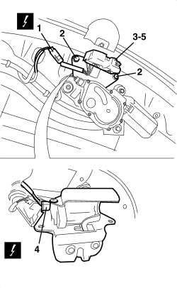
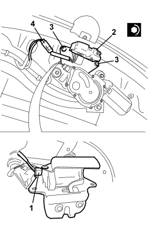

7015B10 SINGLE TAILGATE LOCK - R+R OR REPAIR WITH PANEL/PROTECTION REMOVED
- Path
- Procedures > 70 FITTINGS > 7015 TAILGATE/FLAP > 7015B TAILGATE CLOSING/OPENING DEVICES > 7015B10 SINGLE TAILGATE LOCK - R+R OR REPAIR WITH PANEL/PROTECTION REMOVED
- Kind
- repair procedure (removal / refitting; the operation number is the code)
- Applies to
- all engines; all production periods
- Interactive page
- https://sloeber94.github.io/elrnDB-aBrrSpdr/en/#/946002551
Applies to: all engines; all production periods
 Removing
Removing
 Refitting
Refitting1. Disconnect the electrical connection.
Description | Component |
|---|---|
BOOT LOCK GEARED MOTOR |
2. Undo the bolts.
3. Move the lock slightly.
4. Disconnect the electrical connection.
Description | Components |
|---|---|
BOOT LOCK GEARED MOTOR |
5. Keep the lock and motor.

Applies to: all engines; all production periods
Op. 7015B70 TAILGATE LOCK MOTOR - R.R AND CHECK LOCK SUPPLY LINE
Applies to: all engines; all production periods
Refitting
Removing- Check that the lock and the motor and bridge are not damaged.
Op. 7015B70 TAILGATE LOCK MOTOR - R.R AND CHECK LOCK SUPPLY LINE
1. Connect the motor electrical connection.
2. Position the lock and motor and bridge.
3. Screw in the bolts and tighten them to the recommended torque.
Component | Fastening | dia | Value (daNm) | Validity |
|---|---|---|---|---|
TAILGATE LOCK | Bolt | M6x16 | 0.7 ÷ 1.1 |
4. Connect the electrical connection for the microswitch.

Topics linked from this page (2)
Topics that link to this page (22)
- A030 ALARM NOT WORKING LUGGAGE COMPARTMENT UNLOCKED
- A031 ALARM DOES NOT COME ON WHEN LUGGAGE COMPARTMENT IS CLOSED
- A032 ALARM DOES NOT GO OFF WITH BOOT RELEASE
- A033 ALARM ACTIVATION ACOUSTIC SIGNAL IRREGULAR
- P004 TAILGATE DIFFICULT TO CLOSE
- P030 NO DOORS / BOOT OPEN BUZZER SIGNAL WITH CAR IN MOTION
- 5505B55 TAILGATE WIRING - R.R.
- 7015B15 TAILGATE SINGLE LOCK - R.R.
- 7015B70 TAILGATE LOCK MOTOR - R.R AND CHECK LOCK SUPPLY LINE
- 7205E56 STRIPPING TAILGATE
- E2520 GLOVE COMPARTMENT LIGHT - BOOT LIGHT - SUN VISOR LIGHT - WIRING DIAGRAM
- E2520 GLOVE COMPARTMENT LIGHT - BOOT LIGHT - SUN VISOR LIGHT - COMPONENT LOCATION
- E2520 GLOVE COMPARTMENT LIGHT - BOOT LIGHT - WIRING DIAGRAM
- E2520 GLOVE COMPARTMENT LIGHT - BOOT LIGHT - COMPONENT LOCATION
- E3045 BOOT AND FUEL FLAP OPENING - WIRING DIAGRAM
- E3045 BOOT AND FUEL FLAP OPENING - COMPONENT LOCATION
- E3045 BOOT AND FUEL FLAP OPENING - WIRING DIAGRAM
- E3045 BOOT AND FUEL FLAP OPENING - COMPONENT LOCATION
- E7015 ALARM - WIRING DIAGRAM
- E7015 ALARM - COMPONENT LOCATION
- E7015 ALARM - WIRING DIAGRAM
- E7015 ALARM - COMPONENT LOCATION